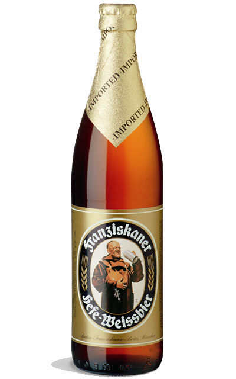

Home
Birre
Menu
Fotogallery
Dove siamo
Contattaci
Guestbook
Newsletter
Franziskaner
 |
Provenienza: Germania (Monaco) Fermentazione: Alta Stile: Hefe-Weisse Gradazione alcolica: 5% Vol Colore: Giallo citrino opalescente Aspetto: Una briosa effervescenza ed una spuma abbondante, soffice, di buona persistenza ed aderenza. Velata per la presenza dei lieviti. Olfatto: Di caratteristica vela agrumata e fruttata con un penetrante sentore di lievi ed un aroma floreale e speziato. Gusto: Corpo morbido di media struttura, fresca leggera e fruttata. Delicatamente acidula, particolarmente rinfrescante e dissetante. Retrogusto pulito ed abbastanza lungo. Note generali: Prodotta nel rispetto della legge di purezza, la sua origine risale al 1363 a Monca accanto ad un monastero francescano è una tra le più fragranti birre di frumento che si possono gustare. Abbinamento: E' eccellente con i weisswurst scottati in acqua, con crauti. Insalate e salumi leggeri, frittate, carni bianche e di maiale ottima con i piatti di pesce. Biscotti alle mandorle crostata di frutta e crespers. |
Copyright © 2009 "Birreria Frankfurters" di Davide de Pascalis Sito web realizzato da Marolla Giuseppe